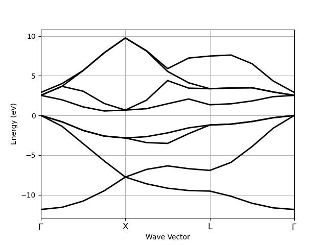

Note
Click here to download the full example code
This example shows how to extract energies along a k-path from a calculation done with a (relatively dense) IBZ sampling.
Out:
K-mesh with divisions: [8, 8, 8], shifts: [0.0, 0.0, 0.0]
kptopt: 1 (Use space group symmetries and TR symmetry)
Number of points in the IBZ: 29
0) [+0.000, +0.000, +0.000], weight=0.002
1) [+0.125, +0.000, +0.000], weight=0.016
2) [+0.250, +0.000, +0.000], weight=0.016
3) [+0.375, +0.000, +0.000], weight=0.016
4) [+0.500, +0.000, +0.000], weight=0.008
5) [+0.125, +0.125, +0.000], weight=0.012
6) [+0.250, +0.125, +0.000], weight=0.047
7) [+0.375, +0.125, +0.000], weight=0.047
8) [+0.500, +0.125, +0.000], weight=0.047
9) [-0.375, +0.125, +0.000], weight=0.047
10) [-0.250, +0.125, +0.000], weight=0.047
... (More than 10 k-points)
================================= Structure =================================
Full Formula (Si2)
Reduced Formula: Si
abc : 3.866975 3.866975 3.866975
angles: 60.000000 60.000000 60.000000
Sites (2)
# SP a b c cartesian_forces
--- ---- ---- ---- ---- -----------------------------------------------------------
0 Si 0 0 0 [-5.89948302e-27 -1.93366148e-27 2.91016902e-27] eV ang^-1
1 Si 0.25 0.25 0.25 [ 5.89948302e-27 1.93366148e-27 -2.91016902e-27] eV ang^-1
Abinit Spacegroup: spgid: 227, num_spatial_symmetries: 48, has_timerev: True, symmorphic: True
Number of electrons: 8.0, Fermi level: 5.598 (eV)
nsppol: 1, nkpt: 13, mband: 8, nspinor: 1, nspden: 1
smearing scheme: none, tsmear_eV: 0.272, occopt: 1
Direct gap:
Energy: 2.532 (eV)
Initial state: spin=0, kpt=[+0.000, +0.000, +0.000], weight: 0.000, band=3, eig=5.598, occ=2.000
Final state: spin=0, kpt=[+0.000, +0.000, +0.000], weight: 0.000, band=4, eig=8.130, occ=0.000
Fundamental gap:
Energy: 0.562 (eV)
Initial state: spin=0, kpt=[+0.000, +0.000, +0.000], weight: 0.000, band=3, eig=5.598, occ=2.000
Final state: spin=0, kpt=[+0.375, +0.000, +0.375], weight: 0.000, band=4, eig=6.161, occ=0.000
Bandwidth: 11.856 (eV)
Valence maximum located at:
spin=0, kpt=[+0.000, +0.000, +0.000], weight: 0.000, band=3, eig=5.598, occ=2.000
Conduction minimum located at:
spin=0, kpt=[+0.375, +0.000, +0.375], weight: 0.000, band=4, eig=6.161, occ=0.000
from abipy.abilab import abiopen
import abipy.data as abidata
# Open the file with energies computed with a homogeneous sampling of the BZ
# and extract the band structure object.
with abiopen(abidata.ref_file("si_scf_GSR.nc")) as gs_file:
ebands_ibz = gs_file.ebands
# This is a GS calculation done with a 8x8x8 k-mesh.
print(ebands_ibz.kpoints)
# Build new ebands with energies along G-X-L-G path.
# Smooth bands require dense meshes.
r = ebands_ibz.with_points_along_path(knames=["G", "X", "L", "G"])
print(r.ebands)
r.ebands.plot()
Total running time of the script: ( 0 minutes 3.407 seconds)